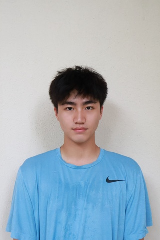

基本信息
备注
会是想竞选的人，有self-motivation
1-page Resume (Encouraged，PDF格式，中英文均可)
Portfolio or Additional Files (Optional，PDF或视频)
请把文件名命为：first name_Last name_netid
请上传一张自己的照片，普通的生活照就可以！（只是为了面试的时候我们可以把你认出来）

查看原图
查看原图
通用问题部分
为什么想要加入CSSA？
身在异国初来乍到，能够找到同样有想法有激情的伙伴是一件很幸运的事。在CSSA，我看到了自己能够奉献时间精力，和其他成员共同把一件事做好的动力；我看到了能让自己在大学学习生活中获得优质集体荣誉感的机会。我期待自己工作上能够努力提升自身能力和经验，更期待工作之余和伙伴们玩的开心，让大学生活有更多色彩。
你心目中CSSA是个什么样的组织？
从广州见面会开始，我就真切感受到了CSSA对于学校学生热情、细致、尽心尽力的服务态度和专业水准。我心目中的CSSA应该是一个聚是一团火，散是满天星的由优秀的伙伴们互相支持，携手维系的一个不失工作态度又具有人情味的紧密社区。在这里遇到同样有责任心、有脑洞、有激情，能够一起做的认真，玩的开心的朋友。
加入CSSA之后，你最想在康奈尔校园内实现的事情是什么？
首先我希望能够尽快和学长学姐对接好工作，多多汲取业务上的经验。未来发展层面：我希望以大一新生的视角来帮助外联部更大程度上选择能够让学生群体满意的同时，CSSA也能获得更多资金的优质赞助商（平衡）。我也希望自己不局限于本部，能够和学联的其他成员多多建立联系，在各种活动各个环节都能看到自己活跃的身影。
外联部
之前是否有谈赞助/谈判经验？若无，请填“无”；
若有，请稍作描述。
高中与朋友共同创办慈善组织，为非洲学龄孩童募集上学资金。与本地/国际共十余家企业对接（包括友邦，佳能等）。在校内设置宣传海报，宣传语；组织举行义卖，公益讲座等活动。
高中在四川凉山州支教，与政府人员对接：将本来对学生相对无用的多媒体教室捐赠计划商议更新为学生奶和餐标支持。
第一志愿为什么选择这个部门？
我认为外联部在CSSA最符合我的专业经验和兴趣方向，在外联部能够遇到志同道合一起奋斗的知己。我希望从外联部开始，发挥自己的价值，为CSSA带来更多的创意和见解，为前辈分担责任。与此同时，我也不把外联部视作一个终点，而是在整个学联发光发热。从最为熟悉的外联做起，一步一个脚印，成就我的CSSA旅程。
内联部
第二志愿为什么选择这个部门？
学习工作之外，我也是一个爱玩、会玩的人。我看中同学/同事内部的化学反应，认为只有彼此熟悉相处舒适，才可以在生活和工作中都成为高效默契的伙伴。我希望将自己组织游戏、活动的经验带到内联部，实现很多天马行空的创意。我平时会关注身边每一个人的情绪变化，在内联部，我可以更好的照顾到CSSA的每一个成员的想法。
是否接受部门调剂？
是